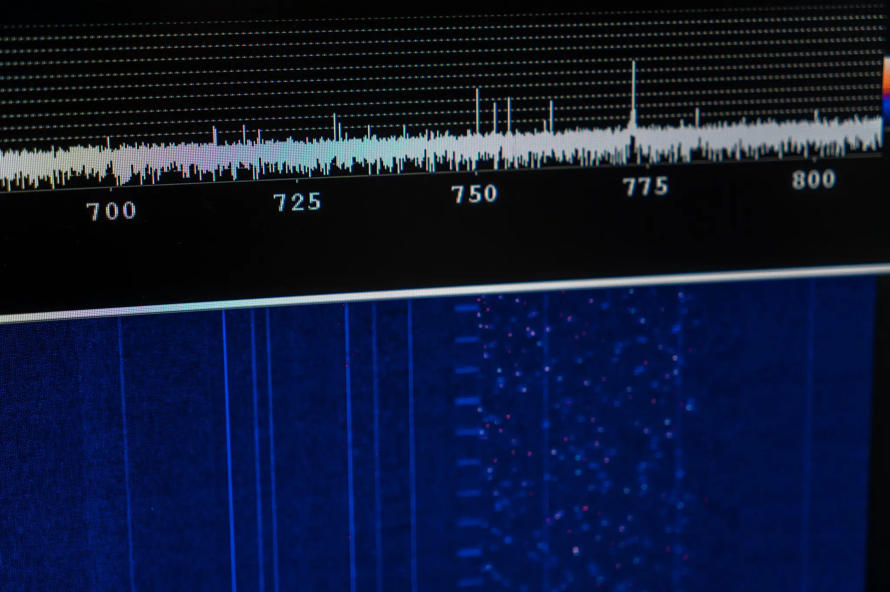
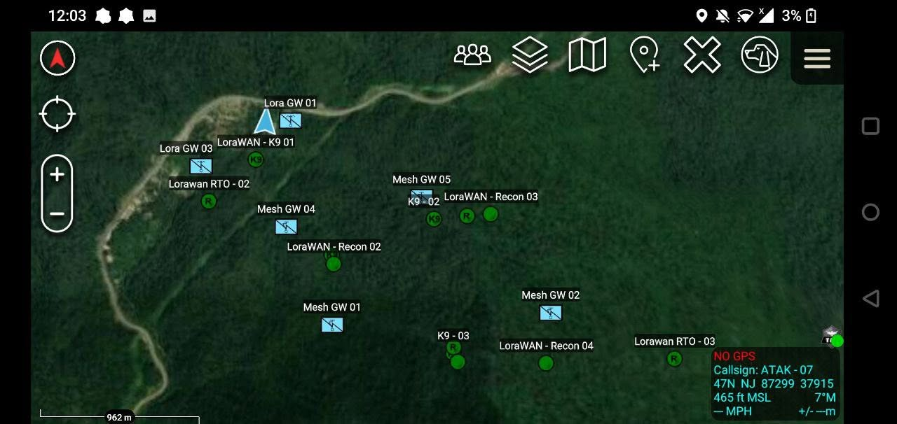
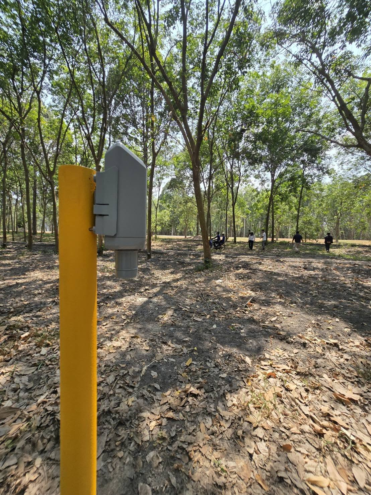

Portfolio
Kittiwut Khongkaeo
Selected engineering projects and system deployments
Delivering connected solutions across IoT, wireless networking, climate sensing, and defense applications.
The People's Network Project
A free, decentralized LoRaWAN network expanding connectivity across Southern Thailand and North Malaysia.
- ScopeNetwork architecture, gateway deployment, and community adoption
- ImpactSmart farming, environmental monitoring, and urban sensors
- TechnologiesLoRaWAN, edge intelligence, open-source infrastructure

Electronic Warfare Systems
Designing resilient electronic warfare capabilities for secure communications, signal intelligence, and electromagnetic operations.
- ScopeEW system design, RF countermeasures, and tactical integration
- ImpactEnhanced battlefield awareness, communications resilience, and spectrum control
- TechnologiesRF engineering, software-defined radios, secure signal processing
Military Tactical & Drone Systems
Secure firmware and software for drones, communications, and real-time mission operations.
- ScopeFlight control, sensor integration, comms stacks
- ImpactResilient battlefield and tactical operations
- TechnologiesEmbedded C/C++, secure networking, mission automation

ATAK TAK Systems
Building ATAK-compatible situational awareness and mission management systems for tactical operations and secure mobile collaboration.
- ScopeMission planning, map-based tracking, and encrypted comms integration
- ImpactImproved team coordination, faster decision-making, and safer field operations
- TechnologiesATAK plugins, Android mapping tools, secure data links, geospatial telemetry

Carbon Monitoring & Climate Technology
Building LoRaWAN CO2 sensor systems for real-time emission tracking and carbon verification workflows.
- ScopeSensor design, deployment, data capture, and analytics
- ImpactMeasurable carbon insights for sustainability programs
- TechnologiesEnvironmental sensors, LPWAN, cloud analytics
Approach
My projects are built to be robust, secure, and ready for real-world deployment. I focus on clear architectural decisions, system reliability, and operational value.
- DesignClear system boundaries and modular architecture
- ValidateField-tested performance and secure operations
- ScaleDeployable solutions for industry and government